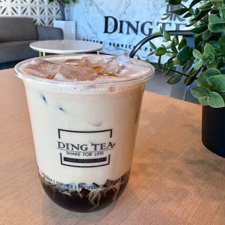

Type: 🧋 Boba / Tea
Address: 10900 Medlock Bridge Rd Ste 301, Johns Creek, GA 30097
Hours: 12:00 PM – 9:30 PM from Monday through Thursday. 11:30 AM - 10:00 PM on Friday and Saturday. 11:30 PM - 9:30 PM on Sunday.

My go-to order is the Oolong Milk Tea — smooth, roasted, tea flavor.
Another Oolong tea drink I know.
📝 Note: They also serve Vietnamese sandwiches, Taiwanese chicken nuggets, and snacks like cheese coins and croffles.
© 2026 Duluth Drinks Guide